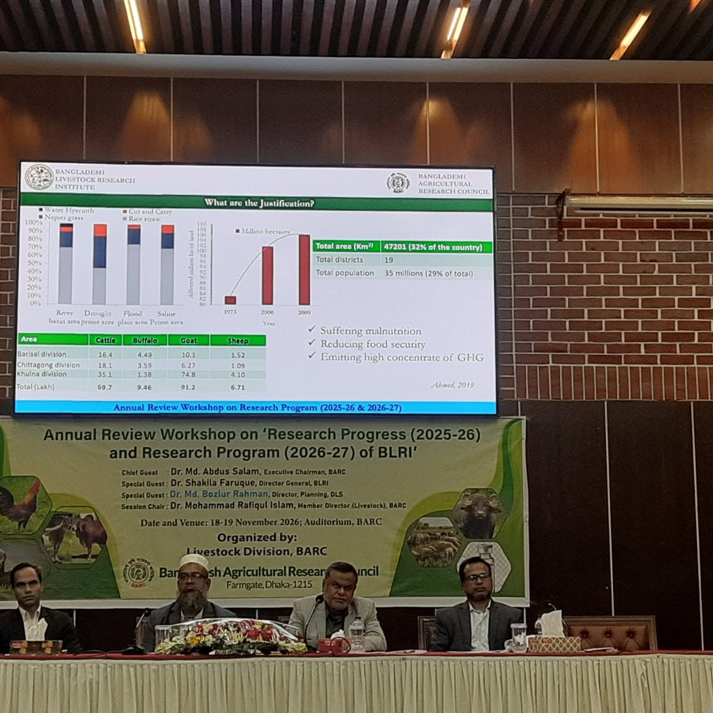
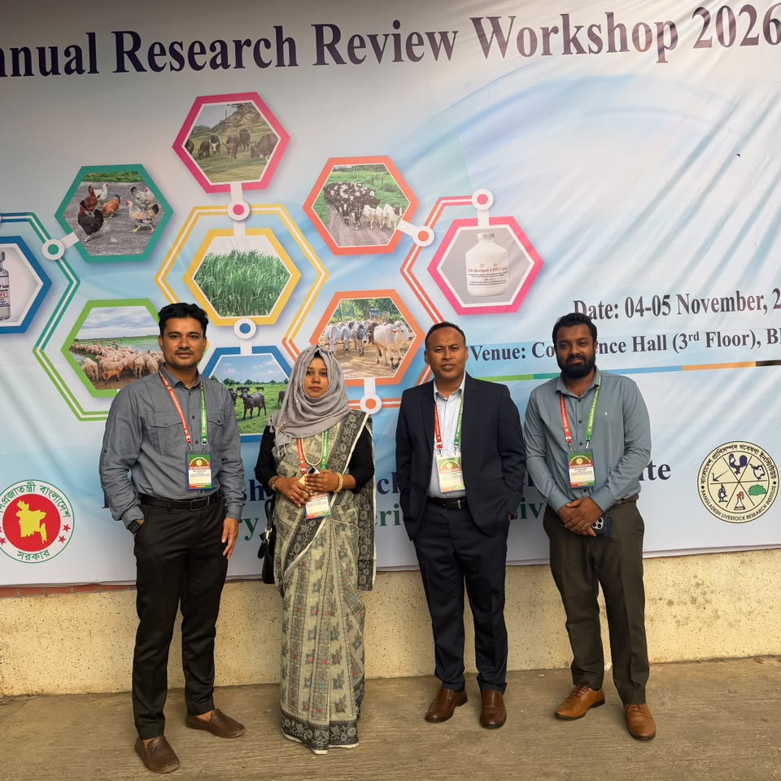
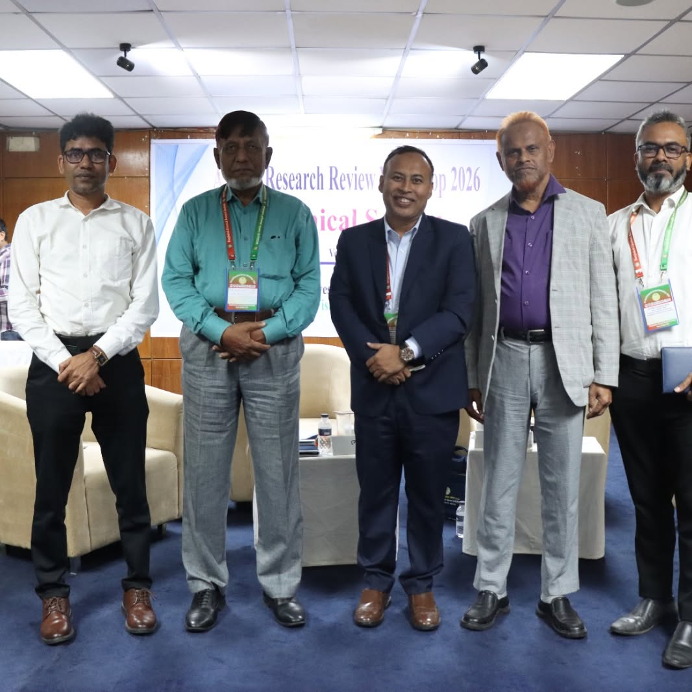

Bangladesh Livestock Research Institute
Making Livestock Farming Work for Climate and Community
Principal Investigator of the IoT-driven 4F (Feed, Food, Fuel, Fertilizer) model project for drought-prone and coastal Bangladesh. Research in forage, ruminant nutrition and enteric methane.
Projects
Principal Investigator
Transforming the IoT-driven 4F model (Feed, Food, Fuel, Fertilizer) for environmentally sustainable livestock production in drought-prone and coastal regions of Bangladesh
A circular production approach linking fodder, food, energy and fertilizer, tested in drought-prone and coastal regions of Bangladesh. Presented internationally as "The 4F circular system for Bangladesh: sustainable, climate-smart livestock production" at SAADC 2025, Can Tho, Vietnam.
Other projects led
-
Comparative genomics and transcriptomics to explore salinity stress tolerance in Napier grass
Identifies genes and pathways associated with salt tolerance in Napier grass, to support cultivars for saline and coastal areas.
-
Profitable Napier silage preparation for the present market and the future TMR industry
Develops Napier silage as a commercial feed ingredient for total mixed ration production.
Earlier projects
- Principal Investigator, CRG project: study of food-feed competition through the introduction of Moringa fodder into existing crops.
- Co-Principal Investigator, CRG project: assessment of methane emission in dairy production systems through the GLEAM model under different climatic zones of Bangladesh and mitigation options.
- Co-Principal Investigator, PBRG project: evaluation of gamma-ray irradiation on stress tolerance of fodder crops under on-station and on-farm conditions.
- Co-Principal Investigator, KGF project: increasing livestock production in the Hills through better husbandry, health service and market access.
- Team member, FAO (Rome) and CCAC enteric methane project: report on the characterisation of dairy production systems of Bangladesh.
Research
Main areas of work. Select an area to read more.
Forage and fodder technology
- Napier grass cultivars: biomass yield, nutritive value, oxalate content and management for cattle growth.
- Moringa fodder: agronomy, harvesting height, propagation and annual biomass production.
- Silage preparation and year-round fodder production models for smallholder dairy producers.
- Stress-tolerant fodder crops, including gamma-ray irradiation studies.
Ruminant nutrition and feed evaluation
- In vitro ruminal fermentation, in sacco dry matter degradability and digestibility of tropical feedstuffs.
- Feeding trials with Moringa on growing bulls and dairy cows, covering intake, rumen fermentation and milk yield.
- Protein and energy feeding of pregnant cows and neonatal calves; crop-residue based total mixed rations.
Enteric methane and greenhouse gas emissions
- Methane production from tropical roughages and protein supplements measured in vitro.
- GLEAM-based assessment of GHG emissions in dairy systems across climatic zones of Bangladesh, with mitigation options.
- Contribution to the FAO / CCAC report on dairy production systems of Bangladesh.
Salinity tolerance in Napier grass
- Comparative genomics and transcriptomics to identify genes behind salt tolerance, supporting Napier production in coastal and saline areas.
Technologies developed
- BLRI Napier-4: team member in generation and in adaptation and validation under farmers' field conditions, 2013.
- BLRI Napier-5
- Moringa as an animal feed
Selected Publications
As principal author
- Bashar MK, Haese E, Sultana N, Rodehutscord M (2024). In vitro ruminal fermentation, methane emissions, and nutritional value of different tropical feedstuffs for ruminants. Journal of Advanced Veterinary and Animal Research, 11(4).
- Bashar MK, Sarker NR, Sultana N, Hossian SMJ (2024). Assessment of GHG emissions in dairy production systems based on existing feed resources through the GLEAM model under different climatic zones of Bangladesh and their mitigation options. Journal of Advanced Veterinary and Animal Research, 11(3):664–674.
- Bashar MK, Huque KS, Sarker NR, Sultana N (2020). Quality assessment and feeding impact of Moringa feed on intake, digestibility, enteric CH4 emission, rumen fermentation, and milk yield. Journal of Advanced Veterinary and Animal Research, 7(3):521–529.
- Bashar MK, Huque KS, Sarker NR, Sultana N, Ahmed S (2019). Study on food-feed competitive efficiency of Moringa fodder in the active Brahmaputra-Jamuna Floodplain Agro-Ecological Zone of Bangladesh. Bangladesh Journal of Animal Science, 48(1):36–41.
- Bashar MK, Huque KS, Sarker NR, Sultana N, Makkar HPS (2017). Study of harvesting height on annual biomass production, chemical composition and in-sacco dry matter degradability of Moringa fodder. International Journal of Agricultural Innovation and Research, 6(1):50–56.
As co-author
- Roy A, Roy BK, Clark CEF, Bashar MK, Sarker NR, Sultana N, Billah MM, Al-Mamun M, Islam MR (2025). Management strategies for Napier grass (Pennisetum purpureum Schumach cv Pakchong): impact on dry matter yield, nutritive characteristics and cattle growth. Animals, 15:1235.
- Roy A, Roy BK, Bashar MK, Sarker NR, Sultana N, Billah MM, Al-Mamun M (2025). Biomass yield, morphological characteristics, nutritional values and in vitro digestibility of different Napier cultivars. Advances in Animal and Veterinary Sciences, 13(7):1445–1460.
- Islam MT, Sultana N, Bashar MK, Miah M, Hasan MS (2024). Biomass yield, nutritional composition, preservation techniques of Moringa oleifera, and the effect of Moringa silage on the milk production and quality of local Red Chittagong cattle. Frontiers in Animal Science, 5:1485887.
- Islam MR, Garcia SC, Islam MA, Bashar MK, Roy A, Roy BK, Sarker NR, Clark CEF (2024). Ruminant production from Napier grass (Pennisetum purpureum Schum): a review. Animals, 14:467. doi:10.3390/ani14030467
The complete list is on ResearchGate.
International conference presentations
- The 4F circular system for Bangladesh: sustainable, climate-smart livestock production. SAADC 2025, Can Tho, Vietnam, 1–4 October 2025.
- Assessment of oxalate content and nutritive values of different Napier cultivars in Bangladesh. Tropentag, Bonn, Germany, 11–13 September 2024.
- In vitro ruminal fermentation, methane production and associative effects between low-quality roughages and protein supplements. Tropentag, Prague, 14–16 September 2022.
- In vitro ruminal fermentation, methane production and nutritional value of different tropical feedstuffs. Tropentag, Stuttgart, 15–17 September 2021.
- Moringa fodder development and food-feed competitive efficiency. Global Conference on Plant Science and Molecular Biology, Valencia, Spain, 11–13 September 2017.
- Effect of exogenous phytase on egg production and egg quality of spent hens (poster). 25th World's Poultry Congress, China, 5–9 September 2016.
Education
2024 PhD, Animal Nutrition and Climate Change
Institute of Animal Science, University of Hohenheim, Stuttgart, Germany. Graduated cum laude. Studied with a scholarship from the NATP Phase-II project (BARC, World Bank).
2011 M.S., Poultry Science
Bangladesh Agricultural University, Mymensingh. CGPA 3.612 out of 4.00.
2007 B.Sc. (Hons), Animal Husbandry
Bangladesh Agricultural University, Mymensingh. CGPA 3.546 out of 4.00. Six-month internship in 2008 with the Faculty of Animal Husbandry (4.00 out of 4.00).
Experience, Awards and Training
Professional experience
| March 2021 – present | Senior Scientific Officer (Forage Development) Bangladesh Livestock Research Institute, Savar, Dhaka |
|---|---|
| September 2012 – March 2021 | Scientific Officer (Forage Development) Bangladesh Livestock Research Institute, Savar, Dhaka |
Awards
- Best Oral Presentation, BLRI Annual Review Workshop, 2016, 2017 and 2018
- Best Oral Presentation, 4th BSAPER International Conference, 2017
- PhD scholarship, NATP Phase-II project, BARC
Professional memberships
- Society of Nutrition Physiology, Germany
- Animal Husbandry Association of Bangladesh (life member)
- Krishibid Institution of Bangladesh (life member)
- World Poultry Science Association
- Bangladesh Society for Animal Production Education and Research (BSAPER)
- Bangladesh Society of Animal Nutrition and Safe Feed
Selected training
| 2025 | Global Methane Hub ration formulation software for dairy cattle, University of California, Davis, USA |
|---|---|
| 2025 | Experiment design and data analysis with R, BLRI |
| 2024 | Climate change, carbon sequestration and adaptation strategies, BARC |
| 2024 | Quality and safety in livestock-source food production and value addition to facilitate export, BARC |
| 2018 | FELASA training on laboratory animals, Goethe University Frankfurt, Germany |
| 2017 | Capacity building on forage management, ACDI/VOCA, USAID |
| 2013–14 | Foundation Training Course, Bangladesh Academy for Rural Development (BARD), Comilla |
Workshops and Research Reviews







Contact
- mkbashar@blri.gov.bd
- Bangladesh Livestock Research Institute (BLRI)
Savar, Dhaka-1341, Bangladesh - ResearchGate